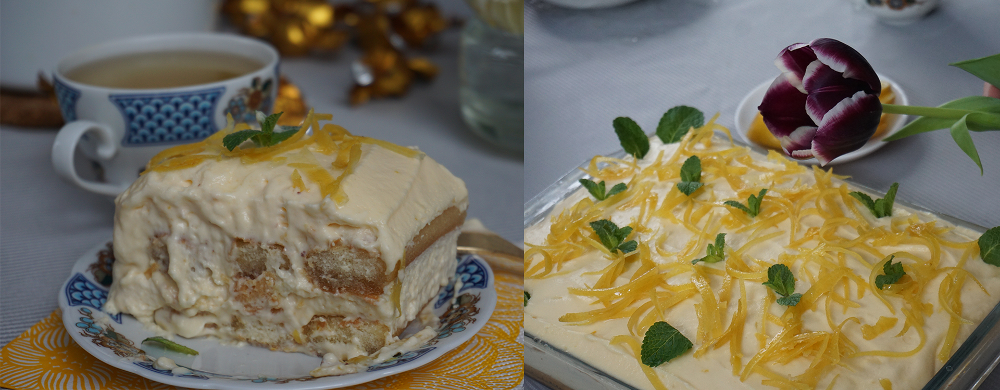

приготовление:
-
Помыть хорошенько от воска 3 лимона, срезать с 2ух из них овощечисткой цедру (стараясь не затрагивать белый слой), порезать цедру тонкой соломкой. В кастрюльку налить 320 мл. теплой воды, насыпать 2 ст.л. сахара, добавить порезанную цедру и выжать сок двух лимонов. Поставить на средний огонь и перемешать. Варить сироп, периодически помешивая, 10-12 минут. Дать остыть. Можно поставить в другую емкость с холодной водой для ускорения.
-
У 6 крупных яиц отделить в две разные миски белки (миска поменьше) и желтки (миска побольше, здесь основной крем будет). Венчиком или миксером взбить желтки с 230 гр. сахарной пудры до посветления массы. Туда же отправить 750 гр. маскарпоне (итальянский в идеале, польский норм), взбить до однородности. С третьего лимона с помощью мелкой терки снять цедру и положить в крем. Добавить 5 ст.л. лимончелло и перемешать все.
-
Отдельно взбить белки со щепоткой соли до твердых пик (при переварачиварии формы белки не вываливаются, а остаются в форме). Нежно лопаткой движениями снизу вверх частями вмешать белки в кремовую массу. Крем готов.
-
Из остывшего сиропа достать цедру (можно процедить в мисочку/кастрюльку, но чтобы по длинне в нее влезало печенье. при этом большУю форму брать не стОит, т.к. не будет нужной глубины, чтобы макать печенье). Цедра понадобится для украшения. Взять прямоугольную форму 18х24 см. Понадобится 250 гр. печенья савоярди (дамские пальчики). Макать печенье по одному в сироп, выложить слоем в форму, сверху половину крема. Потом еще раз слой печенья и вторую часть крема.
-
Оставить в холодильнике минимум на 4 часа, лучше на ночь. Украсить цедрой из сиропа и листиками мяты.